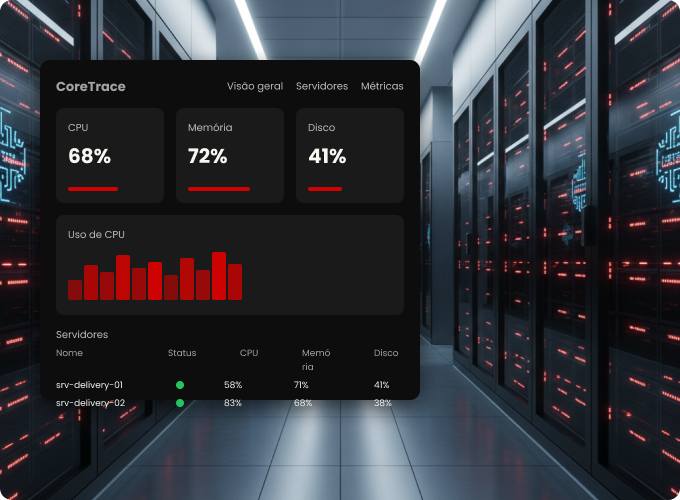

Nossa
história
A CoreTrace nasceu da necessidade de tornar a infraestrutura de TI mais estável, segura e eficiente. Somos um time apaixonado por tecnologia e por resolver problemas reais, unindo monitoramento inteligente, análise de dados e boas práticas para garantir o máximo de disponibilidade dos seus sistemas.
Entrar em contato →
Monitoramento contínuo
A CoreTrace acompanha em tempo real a infraestrutura das plataformas de delivery, monitorando CPU, memória e disco, identificando sobrecarga e mantendo um histórico das métricas para análise de desempenho e prevenção de incidentes
Dados que geram insights
Com métricas precisas e histórico completo, a CoreTrace ajuda sua equipe a tomar decisões mais rapidamente, antecipando gargalos antes que eles impactem a operação.
Mais estabilidade para o seu delivery
Ao identificar problemas antes que se tornem críticos, a CoreTrace garante maior disponibilidade, reduz perdas e mantém a operação do seu negócio sempre ativa.